Дитячи книжки
Книга 1 Принцеса Аннелі і наймиліший у світі поні. Солодкий ліс
Анналена Лухс
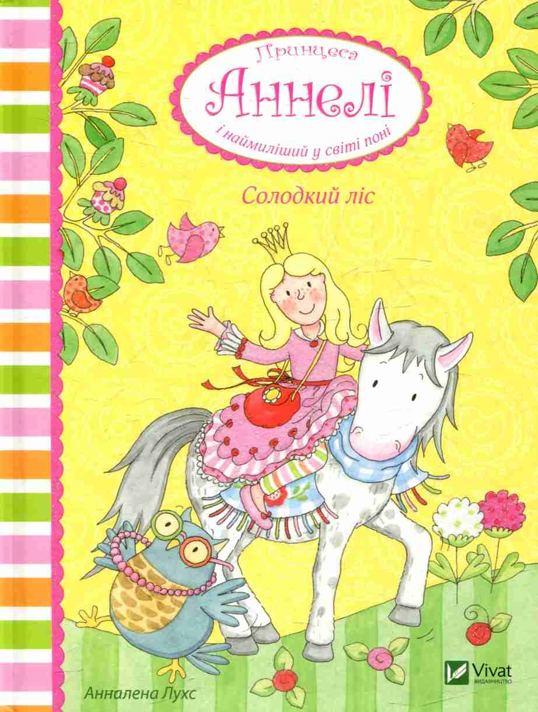Ціна: 93 грн
Принцеса Аннелі разом із другом, наймилішим у світі поні на ім'я Альберт, потрапляє до чарівного Солодкого лісу - дивокраю, де на деревах зріють солодощі, гілки рясно вкриті желейними ведмедиками, а смачнющі льодяники ростуть, як гриби. А ще в Солодкому лісі мешкає мудра сова, яка страшено боїться висоти й бридкого гнома. Хіба ж може хоробра принцеса не допомогти? Тож пригоди не забаряться...
Книга 2 Принцеса Аннелі і наймиліший у світі поні. Бал на Суничному озері
Анналена Лухс

Ціна:93грн
Опис книги
Принцеса Аннелі та її друзі із захватом готуються до балу. Аж тут зникає Хільда, добра буркотлива дикобразиха. Сліди ведуть до Хропливого лісу, а це означає, що їй загрожує небезпека! Друзі вирушають на допомогу. На них чекають неймовірні пригоди, польоти на цукровій ваті і чарівний вальс під місячним сяйвом!
Книга 3 Принцеса Аннелі і наймиліший у світі поні. Чарівний привид місячного сяйва
Анналена Лухс
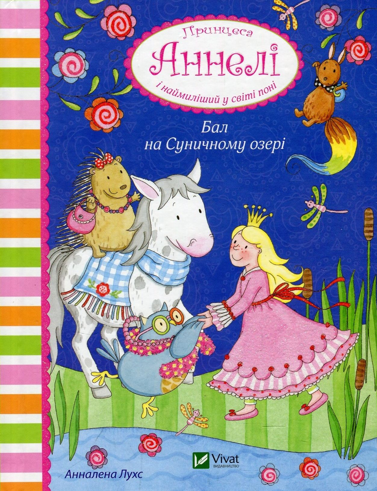Ціна:93грн
Опис книги
Чи можна вірити легендам, якими повниться казковий світ? Чи може страшний однозубий Бомф завадити гостині у справжнісінькому замку? Цього разу принцесі Аннелі та її друзям доведеться зустрітися із жаховиськом і переконатися, що не всі чутки правдиві, а приязність і щире прагнення допомогти може змінити страшне на чарівне.
Книга Маленький принц
Антуан де Сент-Экзюпери
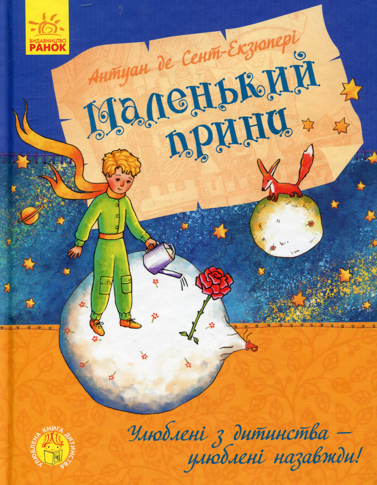Ціна:365грн
Опис книги
Леонові Верту
Даруйте мені, дітки, що я присвятив цю книжку дорослому. У мене дуже поважне виправдання: той дорослий — мій найкращий приятель. Є й друге виправдання: той дорослий може зрозуміти все на світі, навіть дитячі книжки. I нарешті третє:дорослий живе у Франції, зазнає там голоду й холоду. Йому так треба, щоб його хтось потішив. Та коли все це не може виправдати, то я згоден присвятити отсю книжечку тому хлопцеві, яким був колись мій дорослий приятель. Усі-бо дорослі спершу були дітьми, тільки мало хто з них про теє пам'ятає. Отож я виправлю присвяту:
Леонові Верту, коли він був маленьким
Фантастика
Книга 1 Володар перснів. Братство персня
Джон Р. Р. Толкін
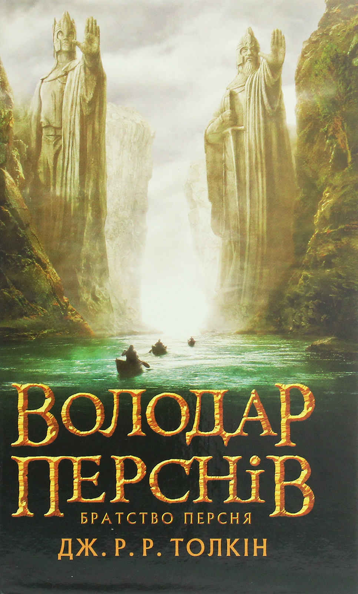Ціна: 589 грн
До рук гобіта Фродо потрапляє чарівний перстень. Саме цього персня бракує Темному Володареві для того, щоби нарешті завоювати увесь світ. Тож Фродо мусить залишити свій дім і вирушити в небезпечну мандрівку просторами Середзем`я. На нього та його нових друзів чекають неймовірні пригоди!
Книга 2 Володар перснів. Дві вежі
Джон Р. Р. Толкин
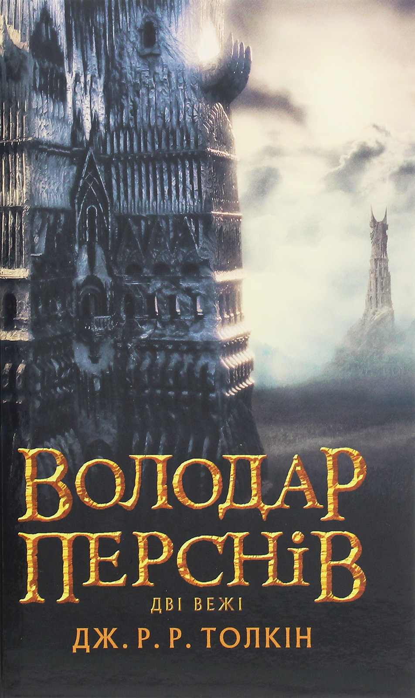Ціна:564грн
Опис книги
Страшна небезпека чигає на загін Хранителів Персня. Безодня поглинула мудрого мага Гандальфа, гине в нерівній боротьбі відважний витязь Боромир. Загін розпадається, і кожен з Хранителів повинен зробити все можливе й неможливе для того, щоб зберегти світ Середзем`я. Двійко друзів гобітів — Фродо і Сем — йдуть до смертельно небезпечного Мордору...
Книга 3 Володар перснів. Повернення короля
Джон Р. Р. Толкин
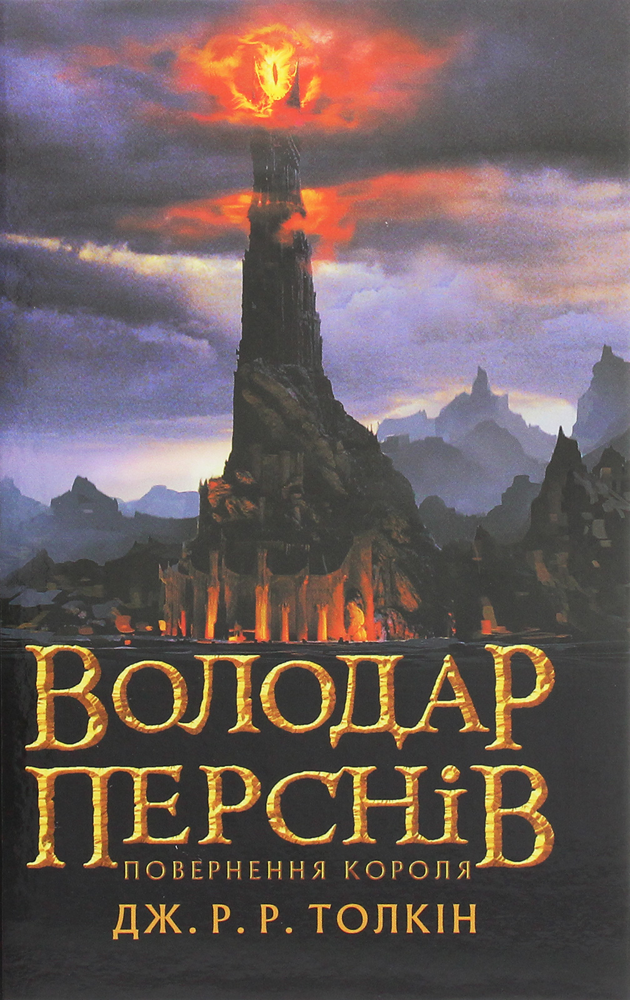Ціна:589грн
Опис книги
Повелитель сил Тьми Саурон направляє свої незліченні раті під стіни Мінас-тіріта, фортеці Останньої Надії. Він передчуває близьку перемогу, але саме це і заважає йому відмітити дві крихітні фігурки — хоббітов, що наближаються до Фатальної Гори, де їм належить знищити Кільце Всевладдя. Чи посміхнеться їм щастя?..
Книга Чарлі і шоколадна фабрика
Роальд Даль
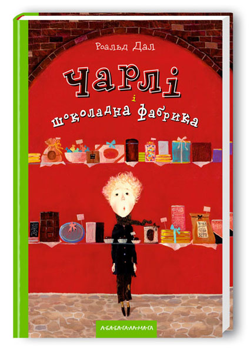Ціна:320грн
Опис книги
Казкова дитяча повість «Чарлі і шоколадна фабрика» Роальда Даля. На сторінках книги розгортається історія хлопчика Чарлі Бакета із дуже бідної сім’ї, який виграв у День свого народження квиток і отримав можливість потрапити на екскурсію до унікальної шоколадної фабрики кондитера містера Віллі Вонки. Впродовж екскурсії із Чарлі трапляються різноманітні випробування, які він зміг здолати завдяки своїй легкій вдачі і доброті, за що й отримав заслужену винагороду. У книзі є своя мораль для дітей: зло буде покаране, а добро завжди отримає винагороду. Із захопленням твір читають як діти, так і дорослі.
Жахіття
Книга Демони бажань. 11 страшних історій
Віоліна Ситнік, Анфіса Сметаніна, Віталіна Макарик...
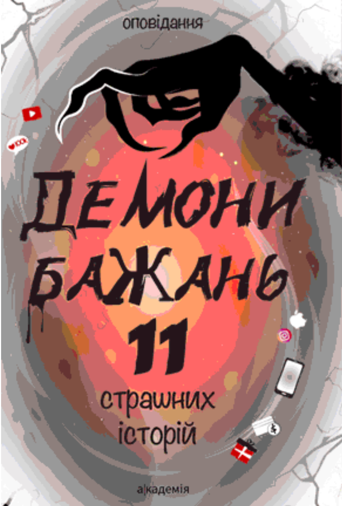Ціна: 324 грн
Вони підстерігають удень і вночі, увечері й на світанку. Чигають у яскраві миті й приходять у моменти самозаглиблених роздумів про все на світі. Вони шепочуть про те, що вже завтра щезнуть суперники, ти станеш відомою і популярною особою, доб’єшся самостійності, здихаєшся надокучливої опіки. Обіцяють здійснення найсолодшої помсти, кохання на все життя, владу і багатство. Достатньо тільки цього побажати — вони почують і почнуть діяти. Вони – демони бажань. Але вони мовчать про спосіб і ціну здійснення бажань. І це може стати дуже великою несподіванкою. Неприємною несподіванкою. Адже за все, що відбудеться чи не відбудеться, треба платити. Що ж, давайте подумаємо про ціну…
Книга Атлас монстрів і привидів
Федеріка Магрін
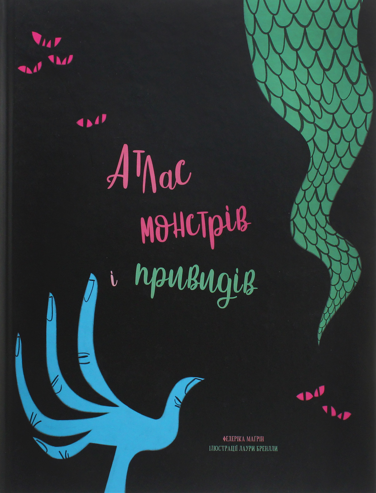Ціна:550грн
Опис
Атлас поділено на розділи, кожен із яких пов’язаний із певною частиною світу і містить карту всіх істот, щоб читачі бачили, де саме водиться те чи те створіння. На подальших сторінках містяться описи різноманітних потвор. Деякі з них — це просто стислий переказ найцікавіших фактів, а інші називають точні місця, де бачили монстрів, перелічують їхні основні властивості та підказують, як їх перемогти.
«Тобі знадобиться вся хоробрість і навіть трішки шаленства, щоб побороти злісних страховиськ, жаских монстрів, капосних привидів або ж спробувати подружитися з деякими більш доброзичливими істотами. Подорож буде складною, але в кінці цієї неймовірної пригоди ти будеш пишатися собою, адже станеш професійним мисливцем на монстрів!» — так говорить Ван Гелсинґ, найбезстрашніший мисливець на монстрів, привидів і вампірів!
Книга Таємниця проклятого лісу
Анна Каньтох
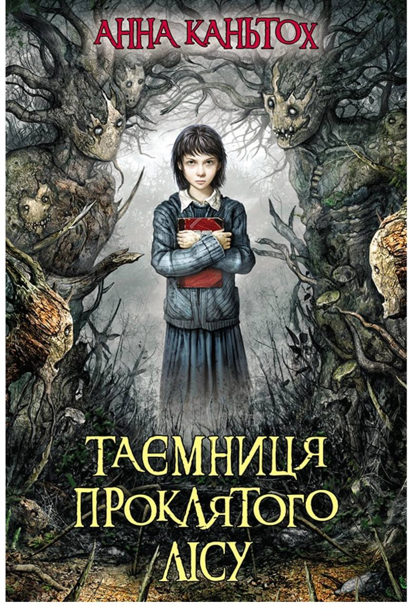Ціна:320грн
Опис
Таємниці ніколи не закінчуються…
Польща, 1953 рік. Минуло два місяці після канікул, що перевернули життя тринадцятирічної Ніни догори дриґом. Магія янголів у покинутому монастирі в Маркотах подарувала їй надзвичайний розум та силу, але вона так і не навчилася їх контролювати. Ніна намагається приховати свої здібності, бо знає, що будь-якої миті за нею можуть прийти ВОНИ — люди в мундирах, котрі полюють на янголів і всіх, хто до них причетний… Тож коли в школу приїздять поручник Лис та сержант Сова, дівчинка зовсім не здивована. Військові забирають її до Інституту Тотенвальд, де зібрали дітей, які контактували з янголами. У Тотенвальді Ніна зустрічає своїх друзів із Маркотів. І цього разу їм доведеться протидіяти не тільки магії янголів, яка зачарувала навколишній ліс, але й людям у мундирах, котрі змушують дітей важко працювати і проводять над ними дивні експерименти…
Книга Ліс духів
Жан-Крістоф Гранже
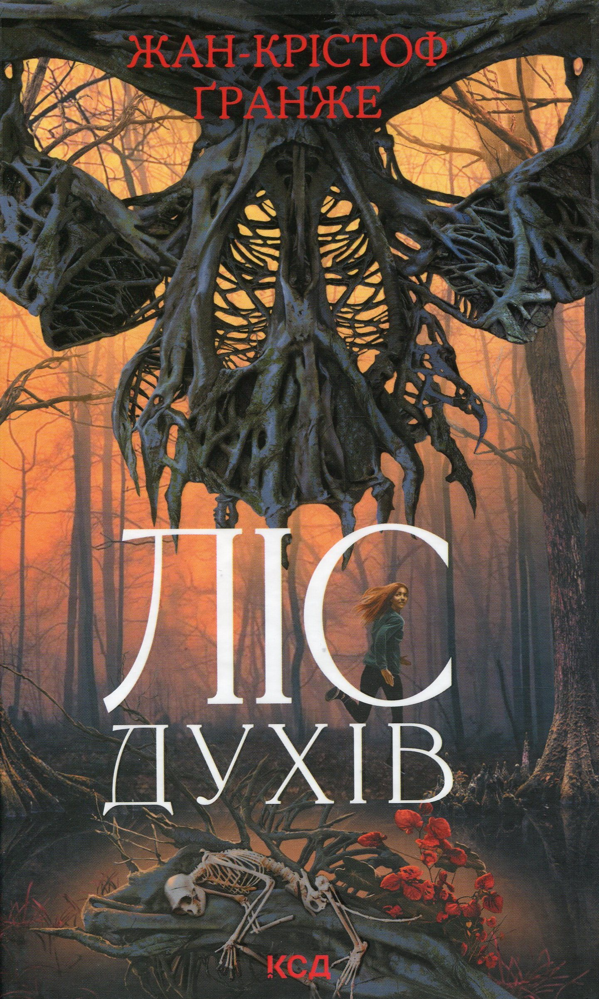Ціна:290грн
Опис
У Парижі з’явився моторошний убивця-канібал. Усі спроби столичної поліції вистежити його не дають результату. Слідча суддя Жанна Коровська поклала собі за мету будь-що знайти злочинця. Її не лякає жорстокість канібала, не зупиняють підніжки колег-чоловіків, які намагаються завадити розслідуванню. Убивця знає, що Жанна йде його слідами, і тікає до Південної Америки. Слідча починає небезпечну гонитву. Одна її похибка — одне людське життя. Посеред непрохідних аргентинських боліт, у нетрях лісу духів, вони опиняться віч-на-віч: тендітна жінка та безжальний, жорстокий монстр. Але всяка жорстокість має свій початок. І вбивцями не народжуються, ними стають. Часом не без сторонньої допомоги...
Романтика
Книга Серце шрифтом Брайля. Том 1
Жорис Шамблен, Паскаль Рютер
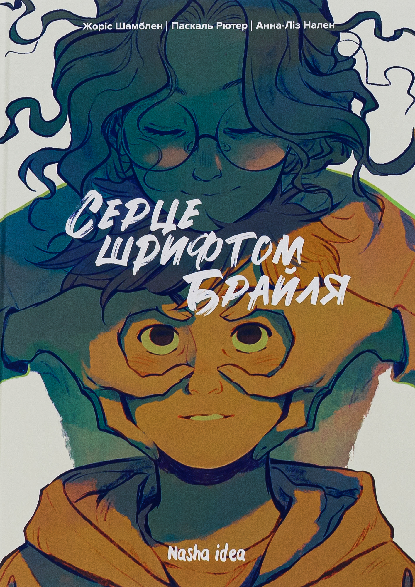Ціна: 370 грн
Віктор любить вінтажні автомобілі та горлати пісні в гурті, який збирається в його гаражі. Але навчання в школі дається йому важко, а про поведінку постійні зауваження. Здається, Віктор постійно каже щось не те.
Коли він знайомиться з Марі-Жозе, відмінницею, яка ще й чарівно грає на віолончелі, вони стають друзями. Неймовірно, як настільки різні діти могли зійтися, але для Віктора це тільки на користь — оцінки вже не лякають, за поведінку не сварять.
Невже в цій історії можна поставити крапку в щасливому хепіенді?
Не зараз. Адже Марі-Жозе має страшну таємницю, якою ділиться з новим другом. Віктор має їй допомогти і спробувати самому не втрапити у велику халепу.
Книга І де був той розум?..
Л. Дж. Шен
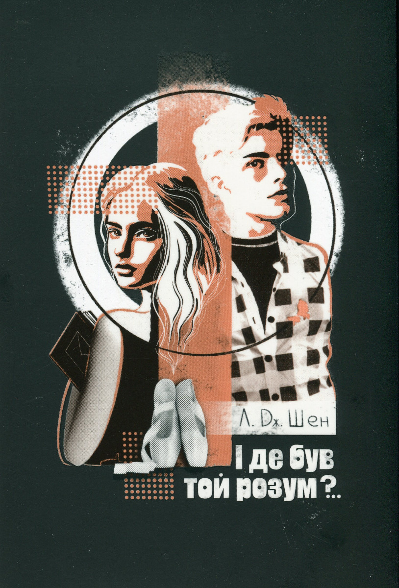Ціна:545грн
Опис
У кожного з нас у душі йде війна між світлом і темрявою. Ніхто не живе без проблем і розчарувань. І навіть у багатої розкішної білявки є свої секрети. І у футбольного капітана, який вирізає в сорочках дірки навпроти серця, теж. У кожного з нас — своя історія, а в ній є розділи, які ми не хотіли б зачитати вголос.
«І де був той розум?..» — роман про кохання й ненависть, вірність і зраду, помсту і прощення — дивує та надихає, шокує й захоплює. І все це — водночас, саме так, як у житті.
Книга Ромео и Джульетта
Вільям Шекспір
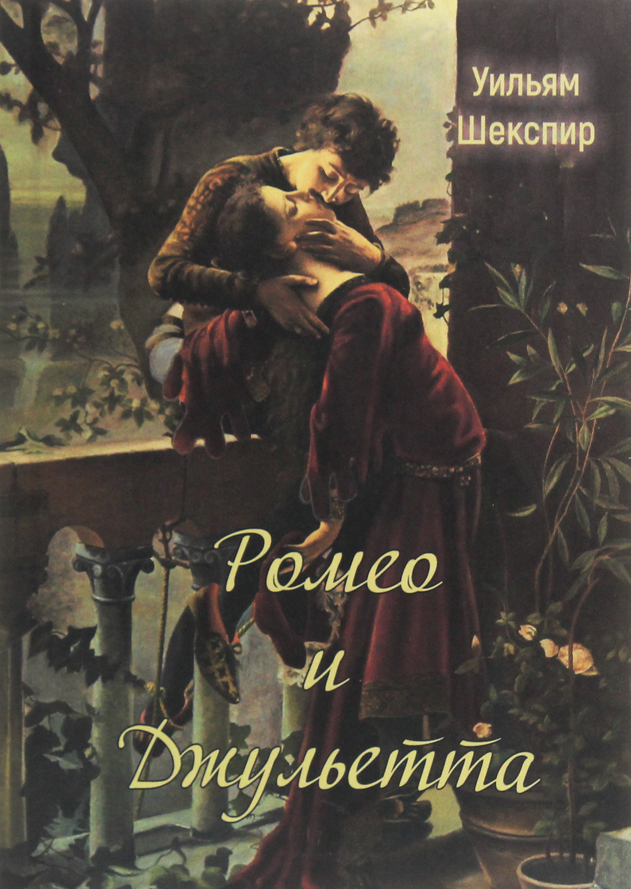Ціна:165грн
Опис
П'єса «Ромео і Джульєтта» стала символом любові, для якої немає перепон. Легендарний твір Шекспіра продовжує завойовувати серця все нових поколінь читачів, будучи найбільш відомим, зворушливим і трагічним твором про кохання.
южет п'єси спочатку виник в новелістиці італійського Відродження, а Шекспір його впізнав в обробці англійського поета Артура Брука в поемі «Ромеус і Джульєтта» (1562). Головні герої трагедії - двадцятирічний Ромео і Джульєтта, якій немає ще й чотирнадцяти років. Дія п'єси охоплює п'ять днів і відбувається на початку XIV століття в місті Вероні.
Книга Фіалки в березні
Сара Джіо
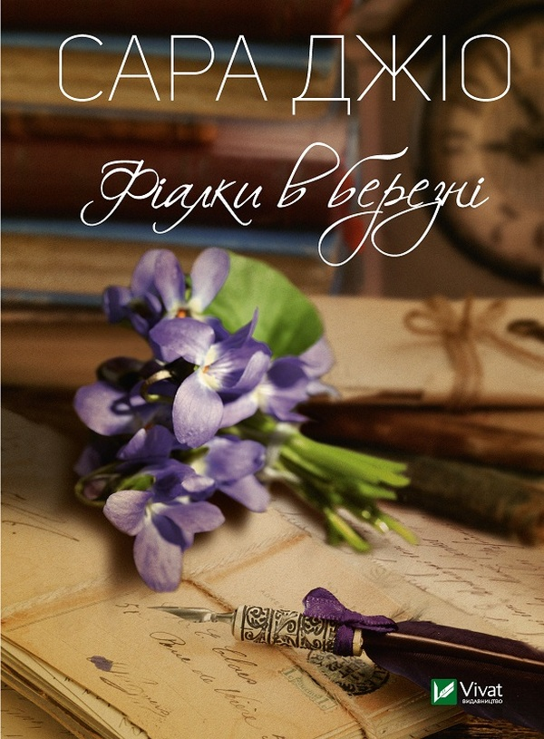Ціна:250грн
Опис
Успішна молода письменниця Емілі Вілсон вирушає з Нью-Йорка на острів Бейнбридж, щоб навідати двоюрідну бабусю Бі. Дівчина пережила розлучення та творчу кризу, тож сподівається, що за межами мегаполісу зуміє опанувати свої думки й почуття. Однак життя на березі океану вже не таке безтурботне, яким здавалося в дитинстві під час канікул. Деякі мешканці острова неначе перебувають у мовчазній змові. Емілі захоплюється новим знайомим Джеком, але бабуся Бі всіляко виказує щодо цього невдоволення.